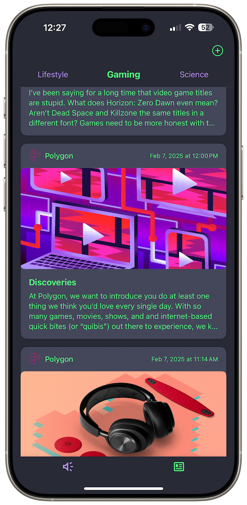

Welcome to Lowkey Tea LLC
Introducing What the Fluff!? News!
Experience news in a whole new way with our innovative iOS app that combines AI personalities, offline reading, and interactive conversations.

App Features
AI Characters
Chat with unique AI personalities that bring the news to life with different perspectives and commentary.
Offline Access
Read and interact with news content even when you're offline, with content downloaded directly to your device.
On-Device Processing
All AI processing happens locally on your device, ensuring privacy and responsiveness.
Customized Experience
The app remembers your conversations and preferences to create a more personalized news experience.
"Blimey, matey! 'Ere's me review o' 'What the Fluff!? News!' - a right laugh, that is. Download this swashbucklin' AI app for some proper cheeky commentary on the goin' on in this mad world, straight from yours truly, Captain Annarky!" - Captain Annarky
Ready to experience news in a new way?
Download What the Fluff!? News! today and start having conversations that matter.
Get the App